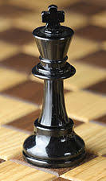
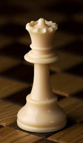
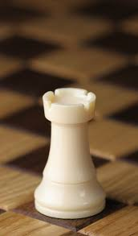
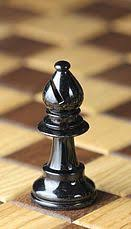
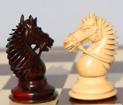
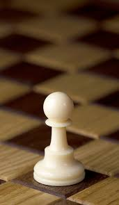

An Overview of Chess
Chess has recently gained an online boom due to a global pandemic and a Netflix series called 'The Queens Gambit.' It is usually thought to be for nerds and old men (which can be true) but has recently found a surge of popularity that hasn't been seen since the days of Bobby Fischer. This article will explain the rich history of chess and how the pieces move.
The History of Chess
"The history of chess can be traced back nearly 1500 years, although the earliest origins are uncertain. The earliest predecessor of the game probably originated in India, by the 7th century AD. From India, the game spread to Persia. When the Arabs conquered Persia, chess was taken up by the Muslim world and subsequently spread to Southern Europe. In Europe, chess evolved into roughly its current form in the 15th century." -Wiki
The Chess pieces
There are six different chess pieces:
The King
Each side has only one King. The King is the most valuable piece because if it gets checkmated the game is over, but he is not too useful until the end of the game because usually he is tucked away in the corner hiding for safety. The king can move one square in any direction. The King does not have a point value assigned to him because you can not actually capture him, only checkmate.
The Queen
There can be only one! The Queen is without a doubt the most powerful chess piece. She can move vertically, horizontally, and diagonally any number of squares unless another piece is in the way. Due to this she has a point value of 9 assigned to her.
The Rook
The Rooks usually do not get involved until the later parts of the game because they start off in the corners of the board. Your own pieces will limit the strength of this piece for most of the game. Rooks can move vertically and horizontally any number of squares unless another piece is in the way. The Rook has a point value of 5 and both sides start with two of them.
The Bishop
The Bishop is a long range diagonal sniper! The Bishop is one of the early fighters but is limited to always being on its own color (light or dark squares). It can only move diagonally and has a point value of 3. Each side starts with two bishops, one on the light squares and the other on the dark squares.
The Knight
The knight is a tricky beast and is probably the hardest piece to learn how to move. It can move one square over and two up, or two squares over and one up. It makes a 'L' shape when it moves. It is special because it is the only piece that can jump over another. It has a point value of 3 and each side starts with two.
The Pawn
Pawns do not get much respect but by far do most of the work during the game. Pawns can only move forward one square except the first move where they can move forward two squares. However, they cannot capture moving forward. They capture diagonally (one square). If the pawn gets to the end of the board, you can promote it to any piece (usually a Queen) besides a King. The pawn is only worth one point but can be of great value.